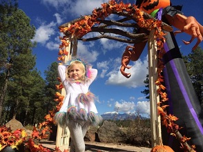
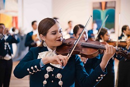

Punpkin Walk and Fest:
Celebrate the fall season with one of Flagstaff’s favorite family events. Enjoy The Arboretum gardens during the evening while following a path illuminated by creatively carved pumpkins. Wear your favorite costume, enjoy refreshments by the bonfire, and don’t forget your flashlight! There will also be a pumpkin-carving contest and a costume contest during the weekend.
 Celebraciones De La Gente:
Celebrate cultural Hispanic traditions at the 16th Annual Celebraciones de la Gente,a lively Day of the Dead festival in Flagstaff. Rooted in community, this weekend-long event is presented in partnership with Flagstaff’s Nuestras Raíces. Don’t miss fine art and unique crafts, Mariachi music, Folklorico and Aztec dancing, colorful and elaborate ofrendas (altars), insightful heritage programs and Day of the Dead inspired crafts for the kids.
Flagstaff Hullabaloo strives to celebrate the community in a responsible and fun atmosphere that both families and funksters can enjoy. We bring together neighbors, families, artists, outdoor enthusiasts, local businesses and non-profits to celebrate Flagstaff. It is through honoring the best of local culture that we intend to throw the party of the year with something for everyone while making the community a better place. flaghullabaloo.com